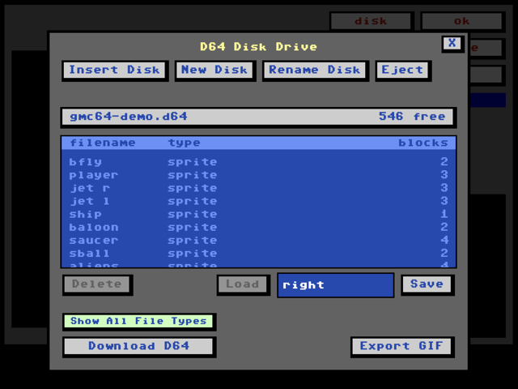

GameMaker, now in your browser.
A faithful, modern recreation of Garry Kitchen’s GameMaker. Load old disks, make new games, edit sprites and scenes, share as a link or a single HTML file.


Just drag a .d64 onto gmc64 and go. No emulator to configure. No virtual 1541 to wait for.
Ready to go
No installation - use it online, or grab the package for yourself. Runs in your browser, even from local files.
Demo disk
Bundled programs and editable assets give you something to poke at immediately.
Embeddable
Use the included play.html to embed in an iframe like a video.
Same tools as the original, but with modern UI. Use your mouse or trackpad to instantly edit sprites and scenes, compose music, tweak sounds. Use your keyboard to choose instructions.
Compatibility

Browse the demo diskgmc64 reads and writes the original GameMaker formats right from .d64 files. Imports and exports PNG, GIF, and MIDI.
Old → new
Load work made on original hardware and edit it in the browser.
New → old
Save back to disk images that can load in the original C64 GameMaker.
Share
Export a self-contained HTML game, or deep-link to a disk and program.
Resources
GameMaker
- gmc64 on GitHub
- Source, issues, and pull requests for this project.
- GameMaker Instruction Manual
- The original instruction manual that shipped with GameMaker
- Garry Kitchen's product page
- The creator's own account of the original 1985 tool.
- GameMaker on Wikipedia
- Reference summary — platforms, reception, and history.
- List of GameMaker games
- gb64.com catalog of programs built with the original.
- GameMaker discussion thread
- Long-running Lemon64 forum thread — decades of enthusiast commentary.
- VIDEO HOW-TO: using GameMaker
- YouTube series on using the original GameMaker should apply to gmc64 as well
Commodore 64
- C64 Wiki
- Encyclopedic reference for hardware, software, and games.
- VICE emulator
- The cross-platform C64 emulator most retro folks reach for.
- Lemon64
- Active forums, game reviews, and the community's front door.
- VIDEO HOW-TO: creating d64 files
- Instructions on creating .d64 files from your old cc64 disks